mkdir -p ~/.vim/ftplugin
sudo vi ~/.vim/ftplugin/log.vim
function DateInsert()
$delete
read !date
endfunction
:call DateInsert():function中没有DateInsert():function DateInsert:filetype:set filetype=log:function DateInsert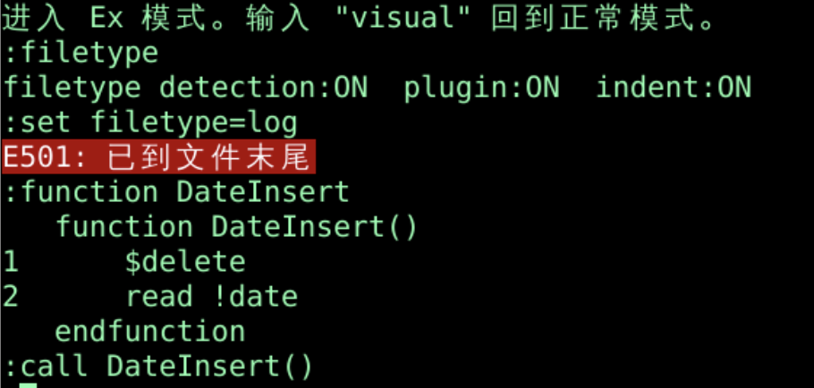
:call DateInsert():visual:h filetype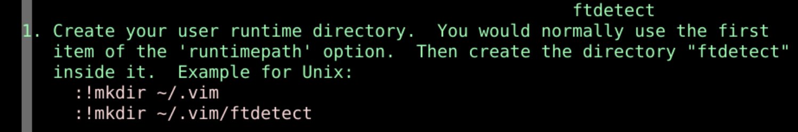
mkdir ~/.vim/ftdetectsudo vi ~/.vim/ftdetect/log.vimau BufRead,BufNewFile *.log set filetype=log
vi a.log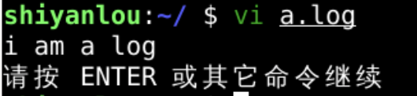
:call DateInsert():nnoremap Di :call DateInsert()<CR>nnoremapn normal 正常模式noremap 不再递归映射<CR> carriage 回车Di Di可以刷新时间:autocmd BufWritePre *.log call DateInsert()autocmd 是命令的名字 BufWritePre 是{events} 是触发条件 Buf指的是当前缓存bufferWrite指的是写当前缓存Pre指的是在写当前缓存之前*.log 是 {file_pattern} 是文件模式*.logcall DateInsert() 是{cmd} :wqcat a.log:autocmd :autocmd! FileWritePre *.logvi ~/.vim/ftplugin/log.vim:autocmd BufWritePre *.log call DateInsert()*.log呢*.*的话log文件DateInsert()了echo "i am a log!"
set filetype=log
source ~/.vim/ftplugin/log.vim
autocmd BufWritePre *.log call DateInsert()
:h autocmd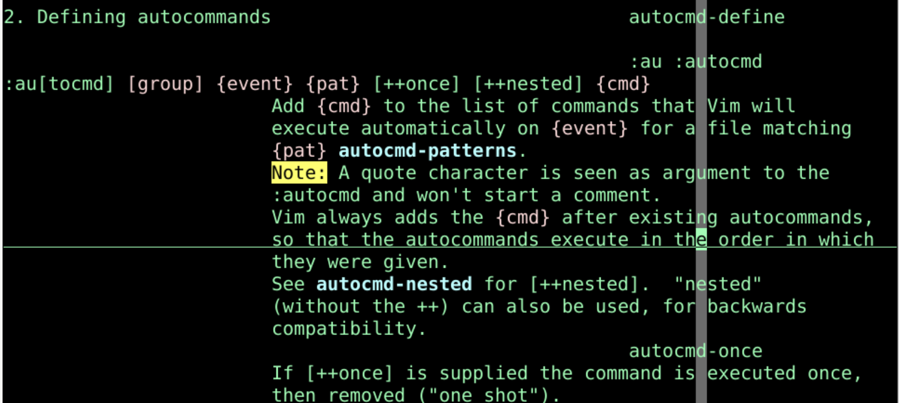
augroup cprograms
autocmd BufReadPost *.c *.h :set sw=4 sts=4
autocmd BufReadPost *.cpp :set sw=3 sts=3
augroup END
autocmd cprograms BufReadPost *.c *.h :set sw=4 sts=4
autocmd cprograms BufReadPost *.cpp :set sw=3 sts=3
:autocmd! cprograms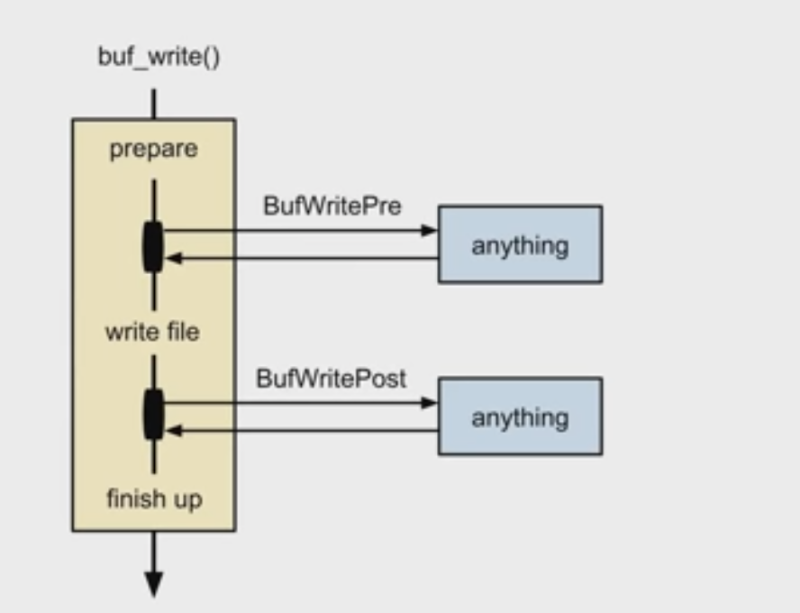
:autocmd BufReadPost *.gsm set filetype=asmBufReadPost是读取之后set filetype=asm:autocmd Filetype text source ~/.vim/abbrevs.vimFiletype textvi a.txt可以触发Filetype textsource ~/.vim/abbrevs.vim:autocmd BufNewFile *.[ch] 0read ~/sktletons/skel.cBufNewFile *.[ch]BufNewFile 新建缓存文件的时候*.[ch] *.c或者*.h0read ~/sktletons/skel.c:autocmd FileChangedShell * nested edittouch oeasy.txt oeasy.txt.newvi:echo expand("%:t"):e oeasy.txt:echo expand("%:t"):echo "hello i am " . expand("%:t")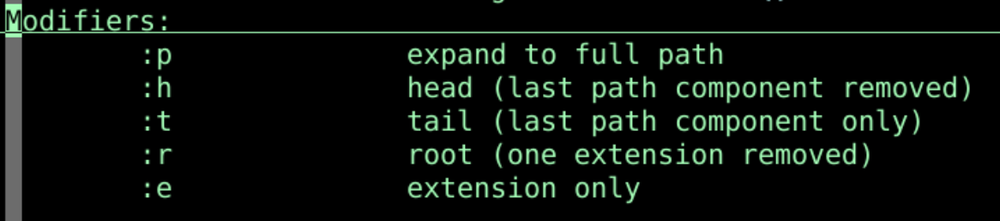
autocmd BufReadPost * echo "hello i am " . expand("%:t"):h expandhello i am eval.txt:doautocmd BufReadPost oeasy.txt
oeasy.txtBufReadPost oeasy.txt对应的自动命令autocmd这样的话我可以在读取oeasy.txt.new的时候
:autocmd BufReadPost *.new echo "hhh " . expand("<afile>:r")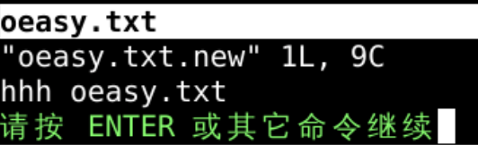
:autocmd BufReadPost *.txt echo "hello i am txt:" . expand("%:t")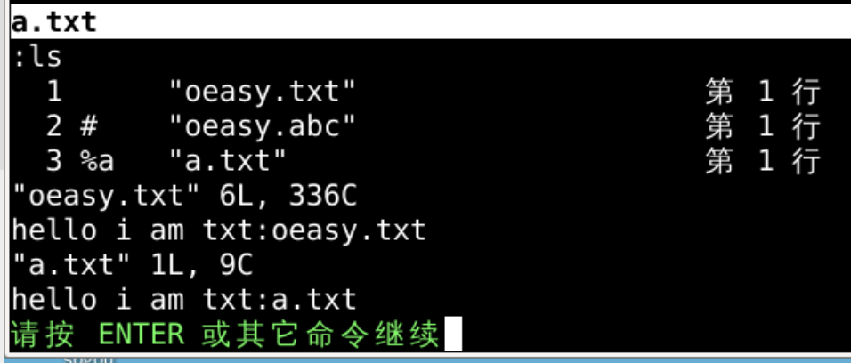
:autocmd BufReadPost *.new execute "doautocmd BufReadPost " . expand("<afile>:r")autocmd BufReadPost *.new*.new打开之后对应的自动命令excute "doautocmd BufReadPost " . expand("<afile>:r")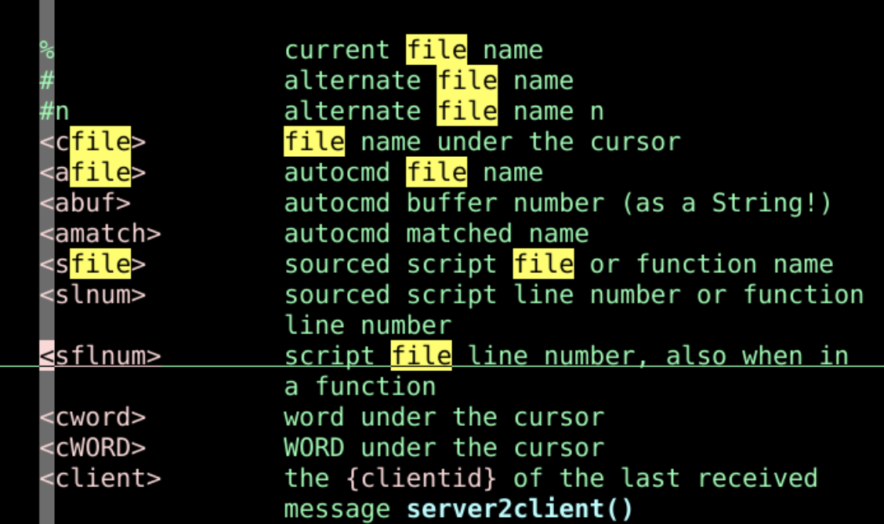
oeasy.txt.new 或者切换buffer的时候oeasy.txt打开后的自动命令execute "doautocmd BufReadPost oeasy.txt"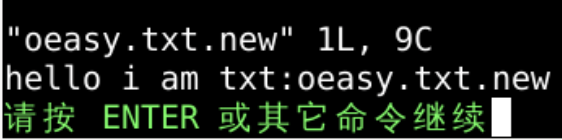
:autocmd BufReadPost *.log normal G*.log的时候那么可以自动命令可以进入插入模式么？
normal进入正常模式，在正常模式下
:autocmd BufReadPost *.txt execute "normal ggONew entry:\<Esc>" | 1read !dateautocmd BufReadPost *.txtexcute "normal ggONew entry:\<Esc>" | 1read !datenormal ggONew entry:\<Esc>在第一行写字| 然后执行1read !date 在第二行写日期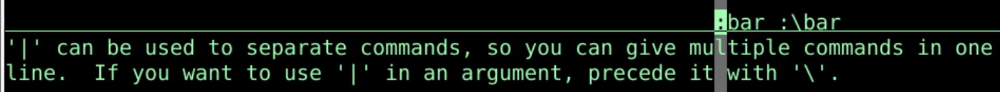
/usr/share/vim/vim81 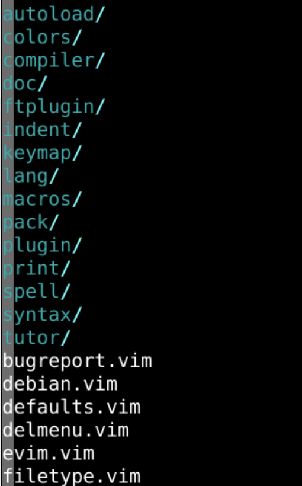
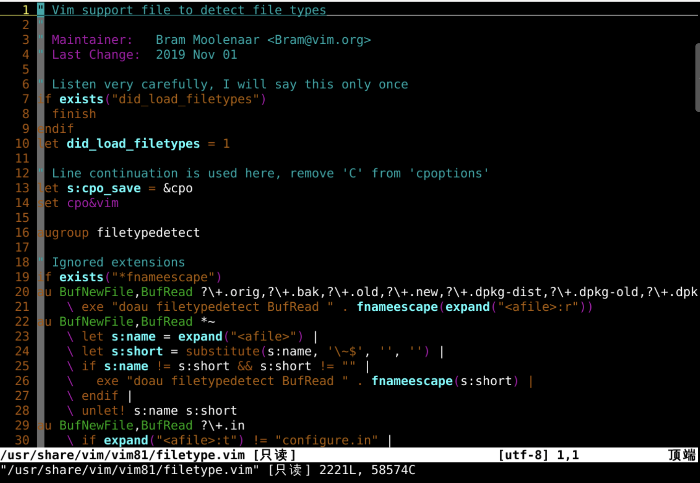
{event} 触发事件{pattern} 文件模式{cmd} 具体执行命令{augroup} 命令组public在java文件里面就可以改变颜色呢？？🤔